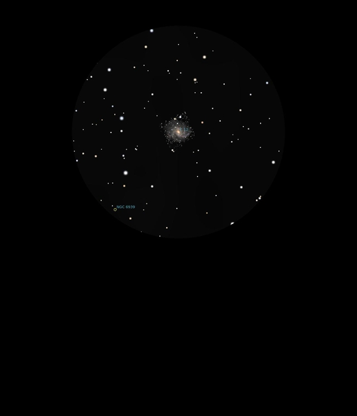

NGC 6946
Spiral Galaxy in Cepheus
NGC 6946
Mag 9.6
The Fireworks Galaxy, Caldwell 12
08/09/16
Just a hint of this Face on Spiral Galaxy between a small
triangle of 10th and 11th Mag stars on one side and a 10th and
11th Mag star on the other
Called The Fireworks Galaxy due to the number of Supernovae
that have been observed within it
Amazing to think that it was discovered by William Herschel in
1798!